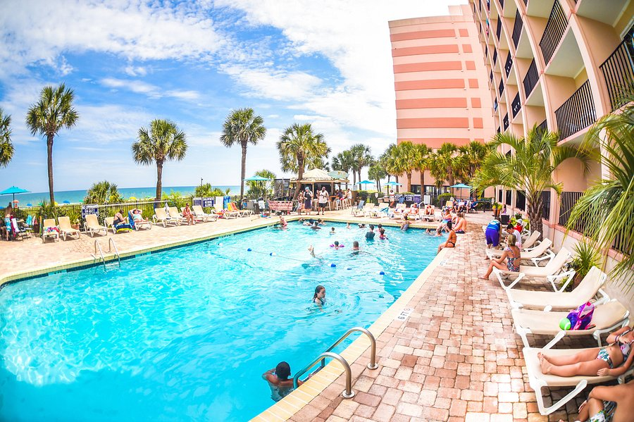
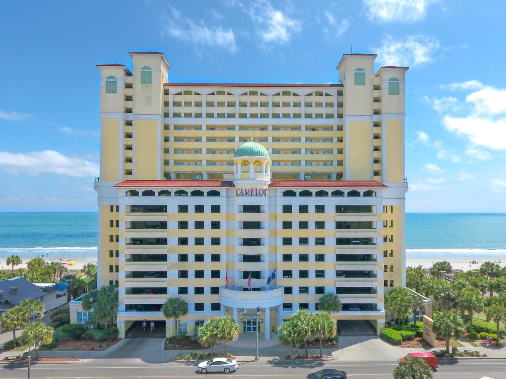
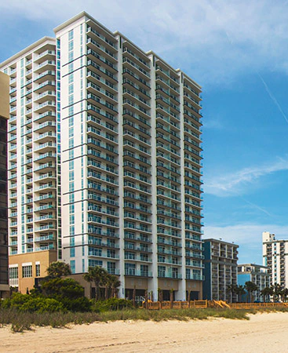

The Sandcastle Hotel - Oceanfront Resort
 A decently sized hotel with free internet, laundramat, one indoor pool, and an outdoor pool deck with a kiddie pool and lazy river. Enjoy our guest-only parking lot that surrounds our three seperate hotel buildings. They house over 150 rooms in total, each with two master beds, a third wall-bed, a single bathroom, and a kitchen complete with a stove, oven, refridgerator, and microwave.
Find yourself having easy access to your vey own personal outdoor deck to take a good look of the ocean. Exit to the side of any building to have easy access to the pool areas, as well as a walkway leading down to the beach.
Camelot by the Sea - By Vacasa
 Welcome to Camelot by the Sea by Vacasa. After Checking in, enjoy a guest-only 8-story indoor parking lot to protect your vehicle from any manner of weather or desecration. Enjoy one of our hundreds of rooms that can be found in the hotel, from nearly 20 different stories. Each room comes equipped with a large flatscreen TV, as well as a full sofa, a fully stocked kitchen area, a bathroom, and a two master beds to make your nights as relaxing as your days.
in the lower part of the hotel is the pool area, complete with an indoor lazy river, and an outdoor pool. paths are on either side of the building for easy acess to the sandy shores.
Hilton Club Vacations
 Hilton Club Vacations is a hotel business with many different locations around the country. Enjoy the perks of a near-25-story hotel complete with guest parking. Enjoy one of the many rooms we have to offer, which includes several beds, a flatscreen television, and other accomadations to make your stay worth it.
Enjoy the view from the deck out into the open sea. Relax as you find yourself laying comfortably in one our pool-area liunging chairs, or enjoy cooling off in the pool. walk down the boardwalk and make your way to the beach where you will find true relaxation.